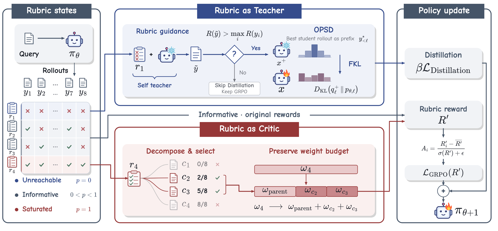
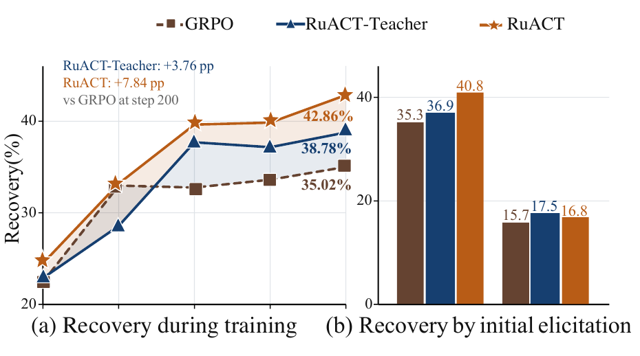
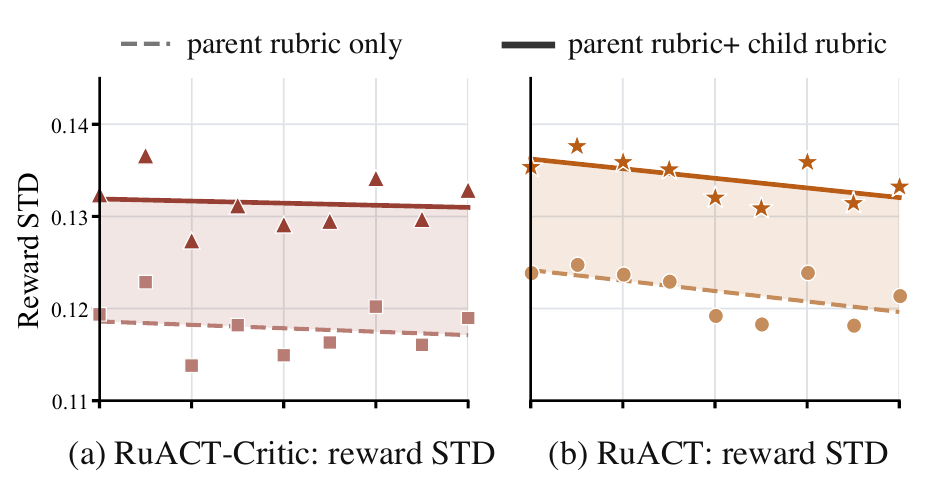
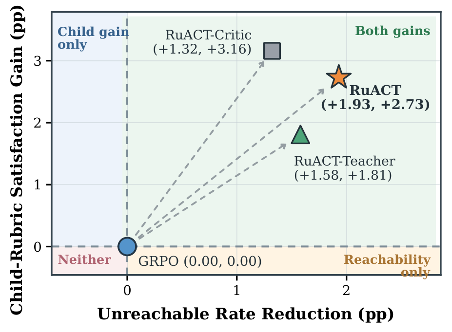

Unreachablep = 0
Lacks the behavior. Stating the rubric in the prompt raises its satisfaction from 1.13% to 91.25%.
→ Rubric as Teacher
1Zhejiang University2Huawei

Rubric-based reinforcement learning (RL) extends RL with verifiable rewards to open-ended tasks by scoring each response against query-specific rubrics. Under group-relative optimization, however, a rubric that every sampled response fails (unreachable) or passes (saturated) gives all responses the same outcome and no learning signal; in Qwen3-4B medical training, 60.88% of query–rubric observations are inactive. We find that the two states lack different supervision: stating an unreachable rubric in the prompt raises its satisfaction from 1.13% to 91.25%, whereas responses that all pass a saturated rubric still differ in quality. We therefore propose RuACT (Rubrics as Adaptive Critics and Teachers), which assigns each inactive rubric the role that supplies what it lacks. Rubric as Teacher uses unreachable rubrics as privileged information for reward-gated on-policy self-distillation, and Rubric as Critic decomposes saturated rubrics into child rubrics that separate current responses while sharing the parent's weight. RuACT outperforms GRPO, rubric reweighting, and rubric-guided exploration on all four medical and scientific benchmarks with Qwen3-4B and achieves the best average with Qwen3-1.7B. On initially unreachable rubrics, unguided recovery rises from 35.02% to 42.86%, while child refinement improves reward–quality alignment on independent rollouts from 57.74% to 60.77%.
Under group-relative optimization, each response is compared with the other responses sampled for the same query. A rubric that all eight responses fail or all pass gives the whole group the same outcome and cancels out of the advantage, so only rubrics with intermediate pass rates provide a learning signal. The two inactive states lack different things.
Unreachablep = 0
Lacks the behavior. Stating the rubric in the prompt raises its satisfaction from 1.13% to 91.25%.
→ Rubric as Teacher
Informative0 < p < 1
Separates the group. Passing and failing responses receive different advantages.
→ original reward
Saturatedp = 1
Lacks a distinction. Responses that all pass still differ in quality.
→ Rubric as Critic
Each square is one of eight sampled responses: filled = passes the rubric, empty = fails it.
RuACT assigns a role according to a rubric's pass rate within the current rollout group. The animation steps through one illustrative group of eight rollouts; use the tabs to jump to a stage.
8 rollouts y1…y8, each judged against every rubric
r1 and r4 give identical outcomes across the group: advantage contribution 0.
An unreachable rubric lacks the behavior, so RuACT uses it as privileged guidance.
A saturated rubric lacks a distinction, so RuACT decomposes it into finer child rubrics.
Case study (paper Table 10)
Query: “Which muscles are specifically involved in the process of expiration?”
Do the children agree with quality, or only add variance? Blind quality judgments on 300 rollout groups (2,400 responses):
| Scoring rule | Quality alignment | Reward coverage |
|---|---|---|
| Parent rubric only | 57.74 | 65.92 |
| With decomposed rubrics | 60.77 | 88.85 |
| With shuffled decomposed rubrics | 53.62 | 90.44 |
Matched children improve alignment by 3.03 points. Shuffling raises coverage but lowers alignment, so reward variation alone is not enough.
RuACT outperforms GRPO, rubric reweighting and rubric-guided exploration on all four benchmarks with Qwen3-4B, and achieves the best average with Qwen3-1.7B.
Best in bold, second underlined, among matched methods.
| Method | RaR-Medicine | HealthBench | RaR-Science | ResearchQA | Avg. |
|---|
Scores in percent; Medicine and Science use separate training runs. Main benchmarks are judged by DeepSeek-V4.1-Flash on frozen responses. OPSD* (an external CriPO reference with a different judge and filtered splits) is excluded from this matched comparison.
Ablations · 4B, Medicine avg.
| RuACT | 48.23 |
|---|---|
| RuACT-Critic | 47.14 |
| Critic, no filter | 46.75 |
| RuACT-Teacher | 46.86 |
| Teacher, no gate | 46.32 |
Other optimizers · 4B, Medicine avg.
| RuACT | 48.23 |
|---|---|
| DAPO-style | 47.78 |
| GRPO+OPSD | 47.11 |
| GRPO | 45.59 |
| Base | 42.92 |
General capability · Qwen3-Max judge
| MT-B R1 | FB HSR | |
|---|---|---|
| 1.7B Base | 7.13 | 43.52 |
| 1.7B RuACT | 7.66 | 45.37 |
| 4B Base | 8.31 | 58.50 |
| 4B RuACT | 8.64 | 59.89 |
Neither Teacher nor Critic alone matches the combination; dynamic sampling and all-rubric distillation both score lower; general abilities (MT-Bench, FollowBench) are preserved.



# install
git clone https://github.com/ZJU-REAL/RuACT.git
cd RuACT && pip install -e .
# configure, dry-run, then train (Medicine, Qwen3-4B)
cp configs/local.example.json settings.local.json
bash experiments/main/medicine/4b/RuACT.sh --settings settings.local.json --dry-run
bash experiments/main/medicine/4b/RuACT.sh --settings settings.local.jsonSee the README and the training guide for data preparation, configuration and evaluation.
@article{li2026ruact,
title = {RuACT: Recovering Inactive Rubrics as Adaptive Critics and Teachers},
author = {Li, Yijun and Lu, Zhengxi and Liu, Zhipiao and Yu, Jinzheng and Weng, Xutao and Shao, Jian and Shen, Yongliang},
journal = {arXiv preprint arXiv:2611.09597},
year = {2026}
}